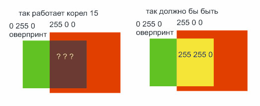

export JPG в RGB с сохранением оверпринтов
belkozz / 17.11.2010, 12:07/00:41
Форум:
собственно сабж. Как сделать такое в нашем любимом кореле?
CMYK хотя бы делает джипеги с сохранением оверпринта черного, а вот RGB и того не может.
собственно сабж. Как сделать такое в нашем любимом кореле?
CMYK хотя бы делает джипеги с сохранением оверпринта черного, а вот RGB и того не может.
В jpg (СМИК) можно сохранить со всеми назначенными оверпринтами, а не только чёрного. Оверпринты предназначены только для СМИК модели и спотовых цветов.
Для RGB принято использовать прозрачность с режимом наложения Multiply. Если же нужно сохранить в РГБ печатный макет, тогда сначало внутри программы конвертируем в СМИК изображение, а уже его экспортируем как необходимо.
Ну я так и подразумевал. Просто бывает очень много макетов, а не у всех есть префлайт.
Ну хоть и на этом спасибо.
П.С. Sancho ты мировой мужик, спасибо тебе за многие плагины и макросы!!!
а как вобще вы себе представляете оверпринт в ргб????
это же аддититвная цветовая модель там светофильтры только ярче светиться могут, а не добавлять краску :)
да и при экспорте в ргб галочка оверпринта становится неактивной - уж не потому ли что это фактически невозможно?
Добавлено (17.11.2010, 13:26)
---------------------------------------------
и ваще, у вас при экспорте стоит галка использовать профили, а профиль ргб и цмика правильные выставлены?
а то поотключают управление цветом а потом удивляются почему он так печатает.
Возможно! Только в Иллюстраторе. Там с оверпринтами в РГБ на ура экспортируется )))
А правильные, это какие? :) Они прям так и подписаны? "правильные профили! используй меня!" :D
belkozz, спасибо!
ну правильный ргб - sRGB, который имеет самый маленький цветовой охват и описывает среднестатистический монитор, на котором заказчики смотрят ваш макет. а техника у них зачастую не самая новая и не самая калиброваная, а некоторые еще и хором сидят за ноутбуком и каждому со своего угла виден свой оттенок цветов :)))
при экспорте же через адобиргб или вайдгамут они увидят весьма блеклую картину...
правильный цмик - ISO Coated или Euroscale Coated :) тоже некий сферический печатный станок в вакууме
собственно они в 15 кореле и стоят по умолчанию
я вот кстати не понял методики работы корела 15 с оверпринтами:
сначала сделал в режиме документа цмик. не понял юмора и подумал что правильнее будет переключить модель документа на ргб, что и сделал.
а делал вот что - на красный 255 0 0 квадрат положил с оверпринтом зеленый 0 255 0 и корел в режиме моделирования наложения выдал странный цвет. насколько я понимаю оверпринт, он цвета оверпринтовой плашки добавляет к цветам которые лежат под ней, то есть должен был получиться 255 255 0 (по аналогии с цмиком), при том что модель документа ргб и я вероятно работаю для веба, просто вот охота мне такой эффект получить, не в рюмку же мне лезть чтобы там режимы наложения перебирать (которые для ргб странно работают)...

вобщем я весь в смятении
и да, при конвертировании да же этой некорректной ерунды в ргб эффект оверпринта пропадает и получаются два квадратика без области пересечения...
это баг или фича?
а у вас печатающий монитор?
у меня излучающий монитор.
вобще, даже в русском кореле оверпринт переведен как "наложение заливки" что как бы намекает что при наложении объектов их цвета будут как бы накладываться и давать "эффекты наложения" основываясь на цветовую модель - я специально обратил внимание что модель в эксперименте использовалась ргб, в цмике я бы понял почему так.
так что рендеринг оверпринта в модели ргб реализован как-то нелогично. с цмиком то как раз все понятно.
увы, переводчики нынче суровы - ничтоже сумняшеся они одни пальцем "расширяют" функционал программы и переопределяют понятия, вводя в заблуждение людей...
Я не говорю про физические свойства мониторов и печатных машин и прочее, но разве вы не сталкивались с проблемой, когда нужно в кореле на процентовку (градиент) пантона наложить процентовку(градиент) допустим черного. Пока у вас цветовая модель CMYK вы в режиме "Simulate Overprints" видите именно тот эффект который вам нужен, но как только вам потребуется вывести это в джипег, для утверждения заказчиком этого градиента...чудным образом вы не можете достигнуть такого эффекта. Это лишь программная эмуляция наложения цветов, и почему реализовать ее не получается, мне не совсем понятно.
Странно, но в Illustrator это возможно )
Поверьте, я не первый день в полиграфии а именно во флексографии и высокой печати. С профилями приходится сталкиваться постоянно.
PS. В общем понятно, будем использовать методику Санчо =) Сначала битмап в CMYK. потом джипег в RGB )